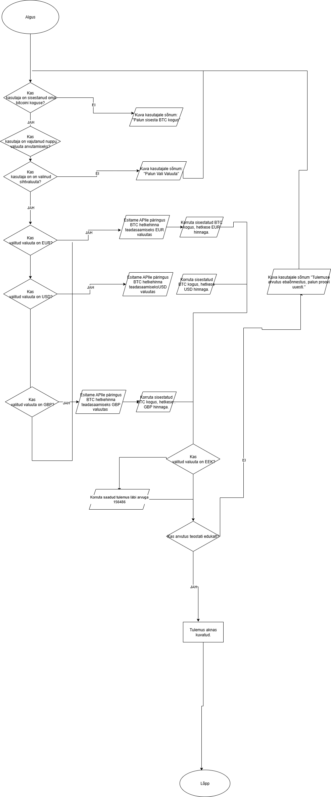

Programm töötab nii, et on olemas kolm kasti. Ühes saab kirjutada väärtust ning selle nimetatakse Bitcoin koguseks.
Teises on kaks valikut, mis on EUR ning USD. Seda nimetatakse sihtvaluutaks. Kolmas on ka kast "Arvuta".
"Arvuta" kasti klõpsamisel, esitatakse API-le päringus BTC hetkehinna teadasaamiseks valitud sihtvaluutas.
Siis, korrutatakse sisestatud BTC kogus, hetkese valitud sihtvaluuta hinnaga.
Pärast, kuvatakse tulemus kasutajale.
Samuti, võib tekkida, et kasutaja unustab mingi andme sisestamist. Sellel juhul, tekib neil kiri, mis teatab kasutajal
et spetsiifilised andmed on puudu (näiteks, Bitcoin koguse mitte sisestamisel teatakse kastis, et Bitcoin kogus on puudu).
Arvutuse ebaõnnestumisel, tekib kastil sõnum mis küsitakse kasutajal proovida uuesti.
